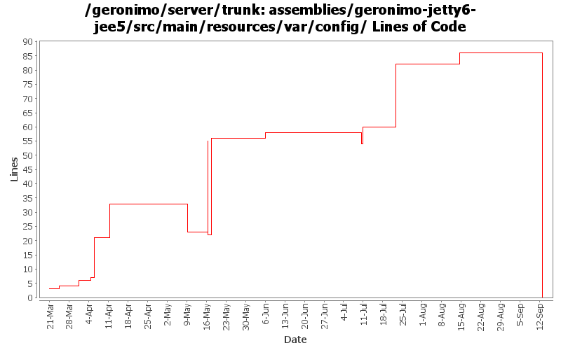

[root]/assemblies/geronimo-jetty6-jee5/src/main/resources/var/config

| Author | Changes | Lines of Code | Lines per Change |
|---|---|---|---|
| Totals | 41 (100.0%) | 208 (100.0%) | 5.0 |
| dwoods | 11 (26.8%) | 90 (43.3%) | 8.1 |
| djencks | 14 (34.1%) | 67 (32.2%) | 4.7 |
| akulshreshtha | 2 (4.9%) | 27 (13.0%) | 13.5 |
| gawor | 1 (2.4%) | 14 (6.7%) | 14.0 |
| gdamour | 2 (4.9%) | 6 (2.9%) | 3.0 |
| jaydm | 4 (9.8%) | 2 (1.0%) | 0.5 |
| pmcmahan | 1 (2.4%) | 1 (0.5%) | 1.0 |
| jbohn | 1 (2.4%) | 1 (0.5%) | 1.0 |
| jdillon | 5 (12.2%) | 0 (0.0%) | 0.0 |
Rename jee5 bits to javaee5
0 lines of code changed in 5 files:
GERONIMO-3330 GERONIMO-3453 More changes. Plugin installer now installs stuff into config.xml, config-substitutions.properties, and external_aliases.properties. Car-maven-plugin more or less gets this stuff into the geronimo-plugin.xml.
1 lines of code changed in 1 file:
GERONIMO-3391 fix remoteDeployAddress, which must be a valid URL
1 lines of code changed in 1 file:
GERONIMO-3391 Use the config-substitutions.properties for the Deployer remoteDeployAddress settings
5 lines of code changed in 1 file:
GERONIMO-2286 GERONIMO-1874 GERONIMO-3140 Adjust schema versions for schemas importing new schema versions
1 lines of code changed in 1 file:
GERONIMO-3271 - Update the xml files that currently reference attributes-1.1.xsd to 1.2
2 lines of code changed in 4 files:
GERONIMO-3335 userRepositories values must be valid URLs
1 lines of code changed in 1 file:
point each assembly at the 2.1 plugin repository list
1 lines of code changed in 1 file:
GERONIMO-2735 clean up config substitutions
29 lines of code changed in 1 file:
Make g. less derby-centric, and easier to override jpa default settings
23 lines of code changed in 1 file:
GERONIMO-3335 make it easy for the local maven repo to be a plugin repo
1 lines of code changed in 1 file:
* Add a Cluster GBean such that we can implement cluster aware services, for
instance a cluster aware deployer;
* When a clustered Web-application is deployed, we now deploy it to a Cluster
by specifying its name. The former mechanism was to deploy it to a
DispatcherHolder;
* Add Node.getJMXConnector such that clients can get a JMXConnector connected
to the target Node instance. Host and port connection details of this
JMXConnector are retrieved via the clustered service proxying/invocation of
WADI; and
* Use a configuration substitution mechanism to simplify the configuration of
node names.
6 lines of code changed in 1 file:
GERONIMO-3303 Major simplification of authentication framework. Removes remote login and supporting code
0 lines of code changed in 1 file:
GERONIMO-3272 eliminate the geronimo-transaction-jta11 module, we are entirely on jta11 now. Also refix logging error for non-NamedXAResource. Also make jpa stuff use spec interfaces and not drag ejb spec into the tm
1 lines of code changed in 3 files:
GERONIMO-3213 Can not deploy webservice offline - part 2.
2 lines of code changed in 1 file:
GERONIMO-3213 Can not deploy webservice offline
0 lines of code changed in 2 files:
Enabled AJP connector for jetty
1 lines of code changed in 1 file:
GERONIMO-3034 GERONIMO-2655 New SelectChannel and AJP connectors. Also hook the connectors up to our thread pool
5 lines of code changed in 1 file:
GERONIMO-3173 port conflict with multiple server instances. Verified portOffset=1 and 10 worked for geronimo-tomcat6-jee5 when the default server instance was running.
8 lines of code changed in 1 file:
GERONIMO-3155 Fix copy and paste error.
15 lines of code changed in 1 file:
GERONIMO-3155 Minimal assemblies have doubled in size due to Yoko being included. Added the xml-attribute and resource back into the connector-deployer, but removed the included yoko depend, so the minimal assemblies don't need yoko (they still need the yoko specs for the ORB class.) Added the xml-attribute to the JEE5 server configs as an attribute with the Yoko depend.
26 lines of code changed in 1 file:
GERONIMO-3155 Apply more of the geronimo-3138-fixbuild.patch. Still need to setup the defaultEnvironment some how...
0 lines of code changed in 1 file:
GERONIMO-3155 The geronimo-tomcat6-minimal assembly has doubled in size, due to the j2ee-corba-yoko CAR being pulled in. I verified the minimal Tomcat assembly starts and the Servlet-Examples deploy and work.
32 lines of code changed in 1 file:
Remove the override of the EJBBuilder GBean. There is no obvious reason
to keep it as many users will not want to change it.
This fixes GERONIMO-3145 - Sample EJB 3.0 application deployment fails.
Patch provided by Tim McConnel.
0 lines of code changed in 1 file:
GERONIMO-2735 Added portOffset to config.xml
Updated config-substitutions.properties in boilerplate-minimal
GERONIMO-3011 Added port configuration for EJBNetworkService, ActiveMQ.stomp.default, and ActiveMQ RA
26 lines of code changed in 1 file:
enabling jaxrpc ejb support
14 lines of code changed in 1 file:
GERONIMO-3057 - include jasper into the minimal assemblies and make the jee5 assemblies consistent wrt jasper
1 lines of code changed in 1 file:
synch tomcat config to jetty config... enable jsps
2 lines of code changed in 1 file:
GERONIMO-2965 GERONIMO-3008 GERONIMO-3010 Tomcat annotation processing with lots of other improvements. Uses LifecycleProvider interface proposed in GERONIMO-3010
4 lines of code changed in 1 file:
Uniformize jetty/tomcat plans, assemblies
0 lines of code changed in 2 files: